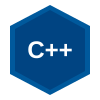

Rezky Awalya
Computer Engineering Student
| Kampus: | UNM Makassar |
| Jurusan: | JTIK |
| Prodi: | Teknik Komputer |
| Semester: | Semester 3 |
| Status: | Aktif |
Halo! Saya Rezky Awalya, seorang mahasiswa semester 3 pada program studi Teknik Komputer, Jurusan Teknik Informatika & Komputer (JTIK), Universitas Negeri Makassar (UNM). Saya memiliki minat mendalam di bidang pemrograman sistem, perancangan perangkat lunak, serta pengembangan web.
Website portofolio ini dibangun menggunakan pemisahan struktur dokumen HTML dan lembar gaya eksternal (CSS) sesuai standar pemrograman web modern, mengimplementasikan konsep selector, tata letak multi-kolom (float layout), navigasi bertingkat (dropdown menu), dan efek interaktif.
Bahasa Pemrograman & Keahlian yang Dikuasai
Berikut adalah bahasa dan teknologi yang telah saya pelajari dan terapkan dalam tugas maupun proyek akademik:

Bahasa utama untuk memahami algoritma, struktur data, pemrograman berorientasi objek (OOP), serta manipulasi memori dan sistem tingkat rendah pada perkuliahan Teknik Komputer.
Digunakan dalam pemrosesan backend web dinamis, logika server-side, pengolahan form, dan pengolahan data pada praktikum pemrograman web.
Membangun struktur semantik halaman web, form interaktif, penyusunan tabel, serta pengaturan tampilan grafis yang responsif menggunakan Cascading Style Sheets.
Ingin mengetahui riwayat pendidikan dan profil lengkap saya?
Jelajahi rekam jejak pendidikan saya dari tahun 2011 hingga berkuliah di Universitas Negeri Makassar.
Lihat Riwayat Pendidikan »